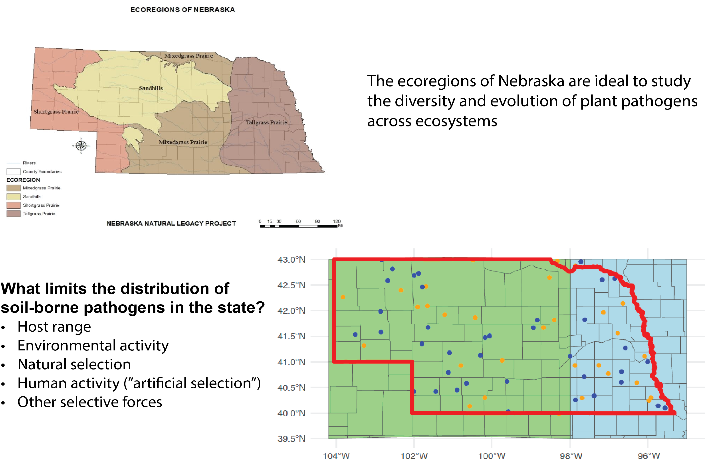
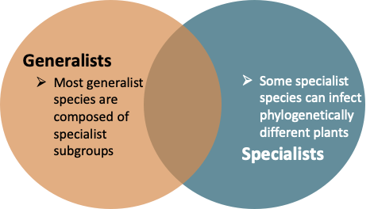
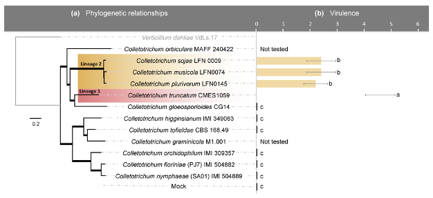

University of Nebraska-Lincoln
The Fungal Ecology Lab
Research Interests
The Fungal Ecology Lab aims to identify the ecological factors involved in the appearance and extinction of fungal pathogens across plant, animal, and human ecosystems, and the implications for the long-term survival of these communities. From the evolutionary history to the etiology of these fungal pathogens, we study the biological and environmental factors that are involved in pathogen adaptation, survival, and epidemiology. We are interested in studying known fungal pathogens as well as pathogens responsible for emerging and re-emerging diseases in the United States and worldwide, representing a threat to crops, sustainable agriculture, and societies. We use molecular-level data and traditional approaches to study different aspects of pathogen evolution in space and time.
Research Questions
What limits the distribution and host range of soil-borne pathogens?

What limits the distribution and host range of soil-borne pathogens?
While this is a broad question, oftentimes we dismiss the limitations that most soil-borne pathogens face on a daily basis and from season to season. In our research, we aim to address this question by documenting pathogen distributions across managed and unmanaged ecosystems in Nebraska.
Pathogen lifestyle transitions

How and when do pathogens transition to a new lifestyle?
We are exploring this question in the context of the evolutionary history of certain plant pathogens, particularly Rhizoctonia solani. We have learned that lifestyle transitions in the context of host range, from a generalist to a specialist may be common in certain fungal species, and may help explain the long-term host-pathogen interactions.
Population diversity and evolution

How does pathogen evolution impact the observed levels of diversity?
It is well known that fungal pathogens are particularly resilient and adaptible. The reason behind this is their ability to quickly change their genome, either by natural selection, recombination, or horizontal gene transfer. Changes in the populations of plant pathogens can provide great insights into their resilience. In our lab, we focus on documenting the diversity at population-level and the among-species divergence. To do this, we employ state-of-the-art genomics and bioinformatics.
Evolution and Ecology of Pathogens
Evolution of pathogens

"Nothing in biology makes sense except in the light of evolution." – Theodosius Dobzhansky
In plant pathology, it's hard to find a more obvious truth: pathogens are constantly evolving.
At the Fungal Ecology Lab, we embrace this reality by placing evolution at the center of everything we study.
Our research focuses on the evolutionary dynamics of plant pathogens—particularly fungi—as they adapt to new hosts, spread across ecosystems, and respond to human-driven pressures like fungicide use.
Whether we're examining host transitions on local farms or across continents, investigating genetic diversity within and among populations, or tracking emerging resistance traits, our goal is to uncover how evolutionary forces shape pathogen biology.
We aim to understand not only what pathogens do, but why—through the lens of evolution.
Ecology

Ecology of pathogens - This section is is under construction.
Resources
- GitHub repository for advanced bioinformatics: Summer 2022 Bioinformatics Workshop - UAlbany
- GitHub repository for basic statistical analyses: X. necrophora SMs GitHub Repository